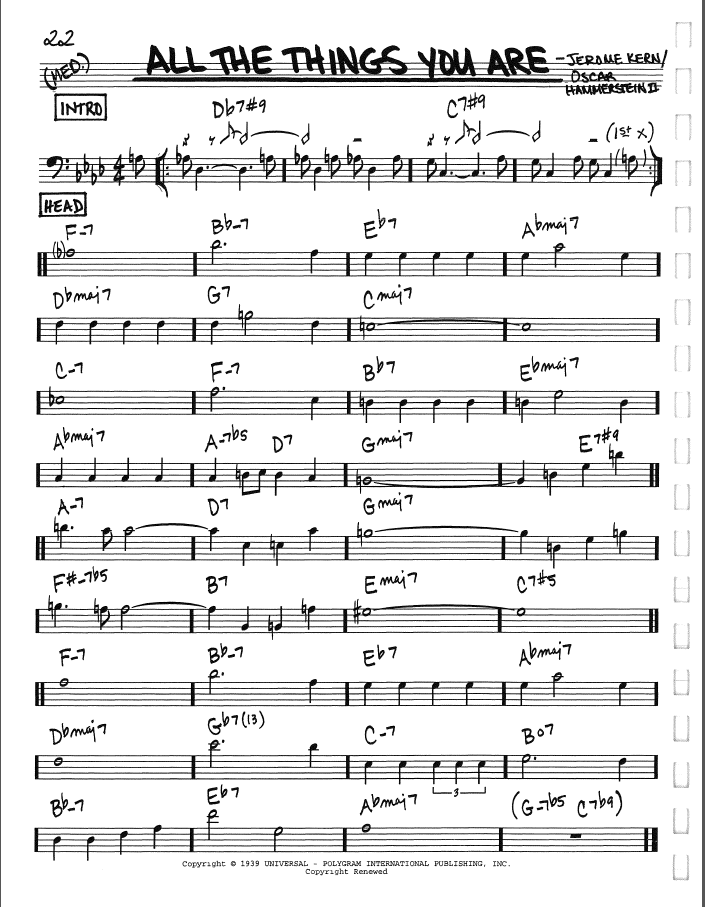
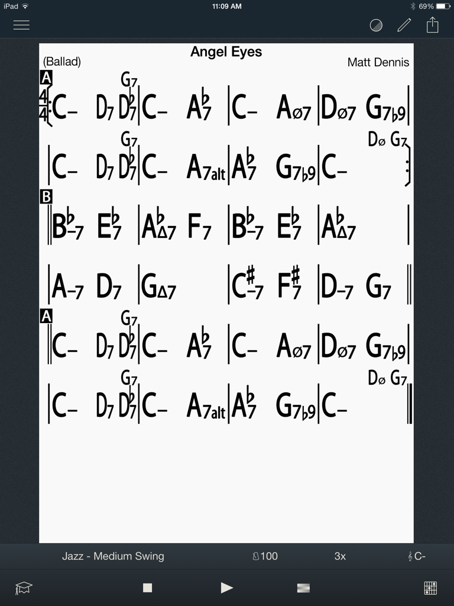
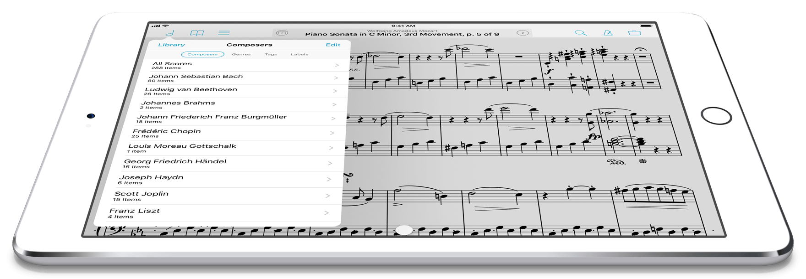

revisions and corrections:
This project is motivated by the needs of the students in our music department and their teachers. Many music students, music teachers and musicians, make use of "fake books" or "real books" as a source of songs. These books are very popular with improvising musicians and students who must both learn to play and to analyse the harmony in these tunes. Initially these books were part of an illegal trade but legal versions of most have now been published by reputable publishers. Many musicians have .pdf versions of these books. Some are copies of the illegal books and some scanned copies of books that they bought but want the convenience of a digital pdf copy.
There are also now some apps available on tablets, like the iPad, that either display pdf books or provide some of there content in a other forms. iRealPro, for example, is a very popular iPad app that provides chord progressions of songs. Forscore is a popular app that displays .pdf's you add to it. It also allows you to import indexing data such as what we hope to provide with this project.
The following describe what is required from the application.
R1.1) Provide an indexing database that catalogs the songs that appear in different pdf books. The database should be usable both to search for songs and to provide indexing information that could be imported into a pdf reader like forscore on the iPad.
R1.2) Allow corrections to the indexing database to be made by users as they discover errors. It is expected the users will contribute indexing data and thus we expect to have to make corrections.
R1.3) Along with access to .pdf charts of the songs (supplied by the user) the database would contain the key, chord changes, and chart navigations of the songs. (Similar to the content shown by the iRealPro iPad app. That is, complete song charts with only chord data (no melodies or lyrics).
R1.4) That database would allow a user to locate songs that contain a specific chord sequence, and to locate the bar in the song where this sequence occurs. (Often a sequence can occur more than once in a song.)
R1.5) The search for songs with a specfic chord sequence could be done for a specific chord sequence of named chords, or the equivalent in all 12 musical keys. (That is, search for a harmonic progression independent of musical key.
R1.6) The target size of the database would be upwards of 30,000 songs, and represent the contents of more than 100 books.
R1.7) The application should allow users, including those without musical backgrounds, to input and modify chord progressions of songs. The user interface should hopefully be such to not require much in the way of music knowledge to confidently enter the data.
R1.8) Application hosting should be web-based with user interaction through any popular browser (e.g. chrome, firefox, edge, safari etc.).
Because the proposed database would only contain indexing information (location of a song in a paricular book) and only contain chord progressions of songs (no melody or lyrics) it is our belief that we would not be in violation of copyrights in making such a database, or service, public. More specifically:
CPY1.1) It is our belief that while it is illegal to reproduce works of art or intelectual propery, it is not illegal to catalog them. That is, it is not against copyright laws to build and publish a database of which songs appear in which books and on which page those songs appear. (In effect, that it is not against current copyright laws to publish what amounts to the table of contents data of a book.)
CPY1.2) It is our belief that the chord progressions of songs cannot be copyrighted and so it is not illegal, or against the copyright act, to put in a public database the exact chord progressions of songs. (Similar to what the iRealPro app displays for users.) By the way, iRealPro, formerly, iReal Book and later iRealb, initially contained chord progression data, but in later versions removed the data from the app and instead users made it available through public forums. It is possible the app developer might have been "bullied" into removing the data from the app even though there appears to have been no violation of copyright. This appears to be a commons occurrence in data-based apps.
Below are sample documents for that show the sources of raw data.
The chart is from the Real Book 1 6ed published by Hal Leonard


